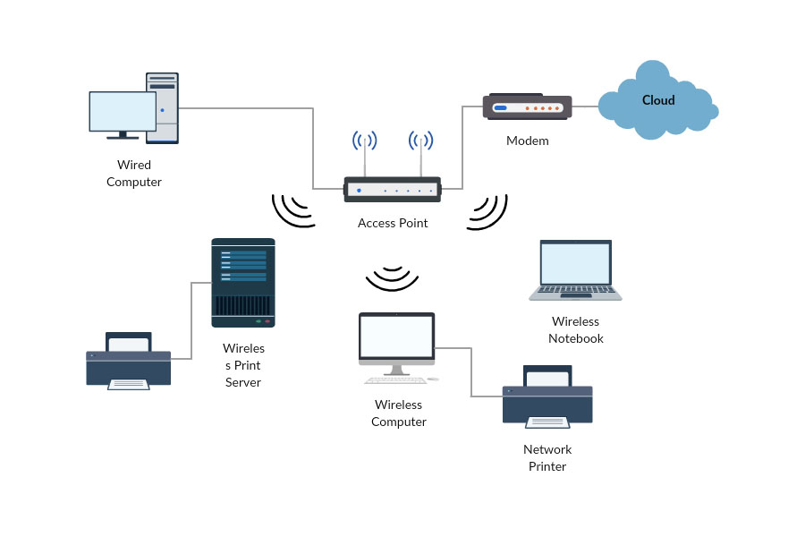

What is a Wireless Network?
Wireless networks are computer networks that are not connected by cables of any kind. The use of a wireless network enables enterprises to avoid the costly process of introducing cables into buildings or as a connection between different equipment locations. The basis of wireless systems are radio waves, an implementation that takes place at the physical level of network structure.
Types of Wireless Networks
Wireless networks use radio waves to connect devices such as laptops to the Internet, the business network and applications. When laptops are connected to Wi-Fi hot spots in public places, the connection is established to that business’s wireless network.
- There are four main types of networks:
- Wireless Local Area Network (LAN): Links two or more devices using a wireless distribution method, providing a connection through access points to the wider Internet.
- Wireless Metropolitan Area Networks (MAN): Connects several wireless LANs.
- Wireless Wide Area Network (WAN): Covers large areas such as neighboring towns and cities.
- Wireless Personal Area Network (PAN): Interconnects devices in a short span, generally within a person’s reach.